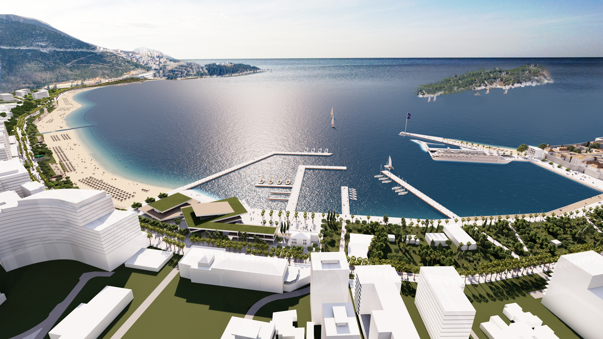
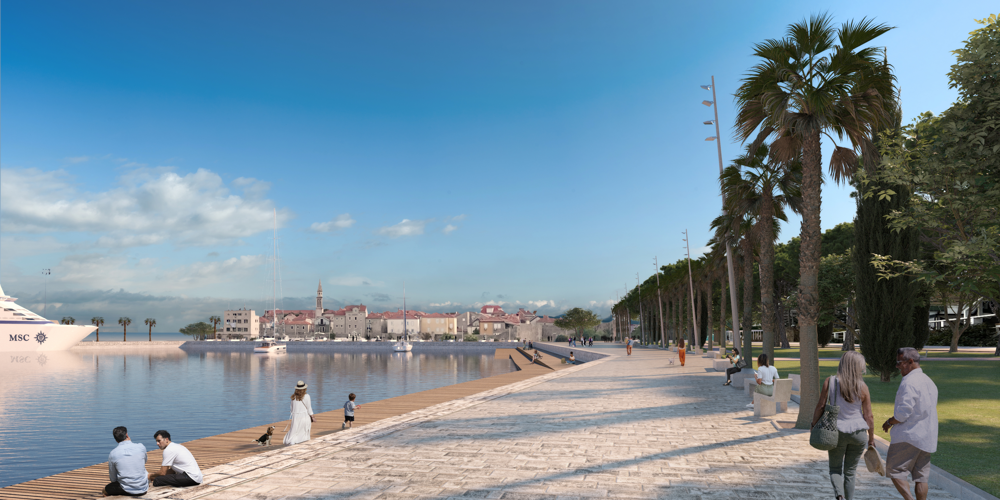
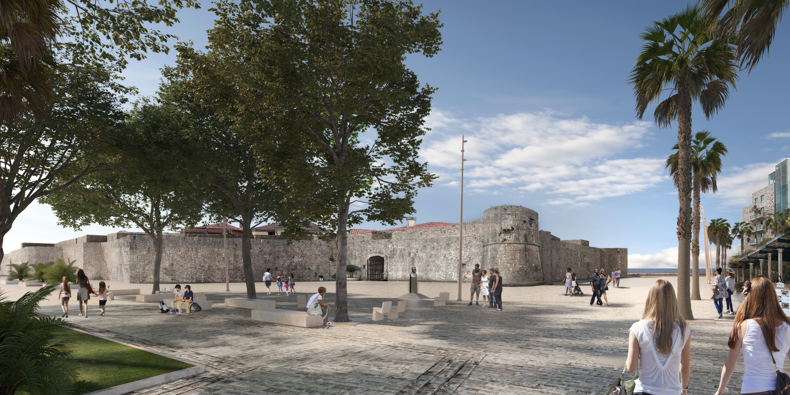
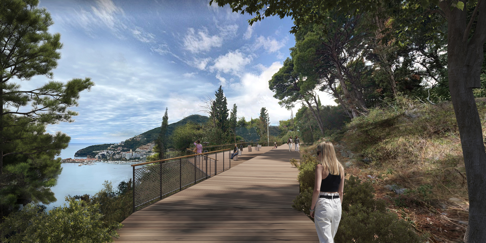
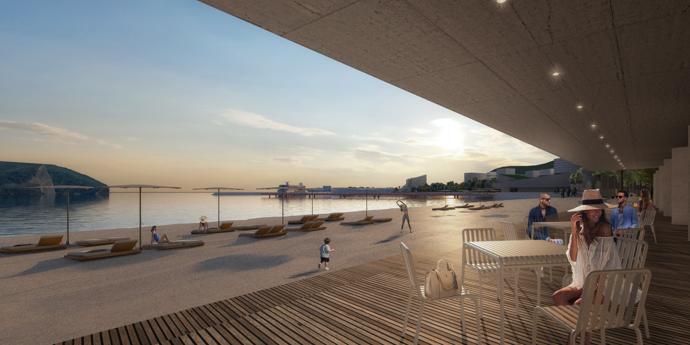
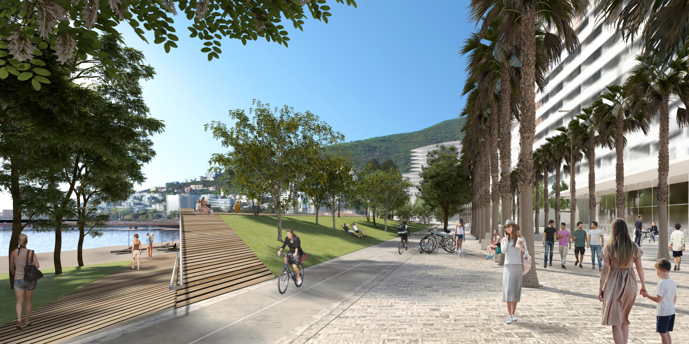
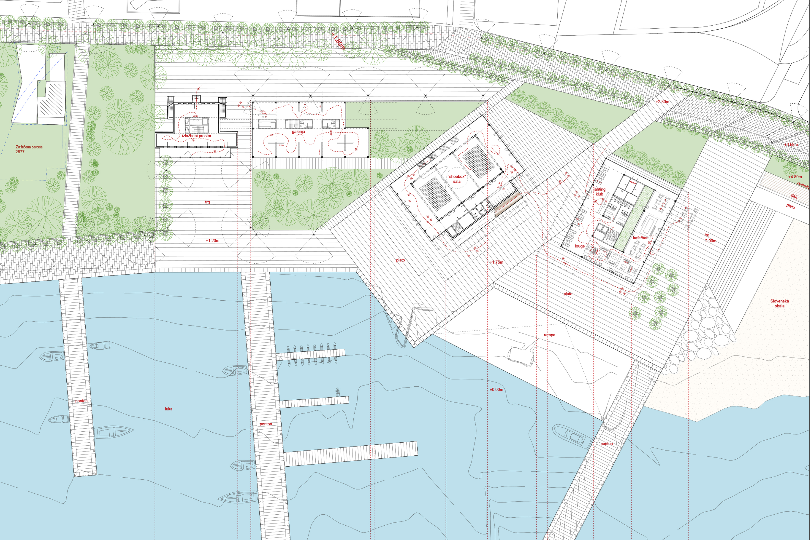
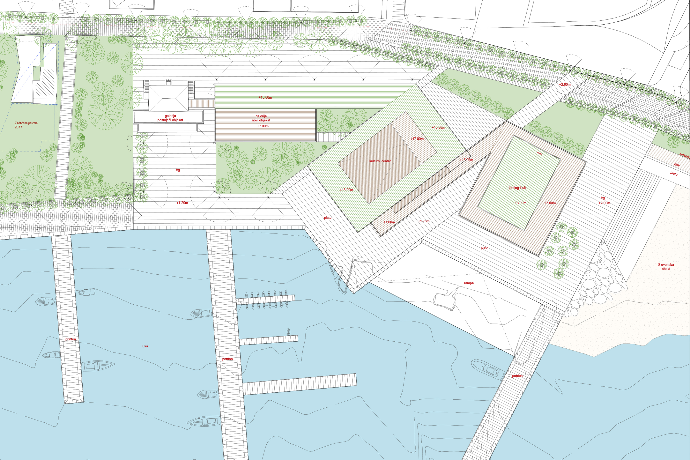
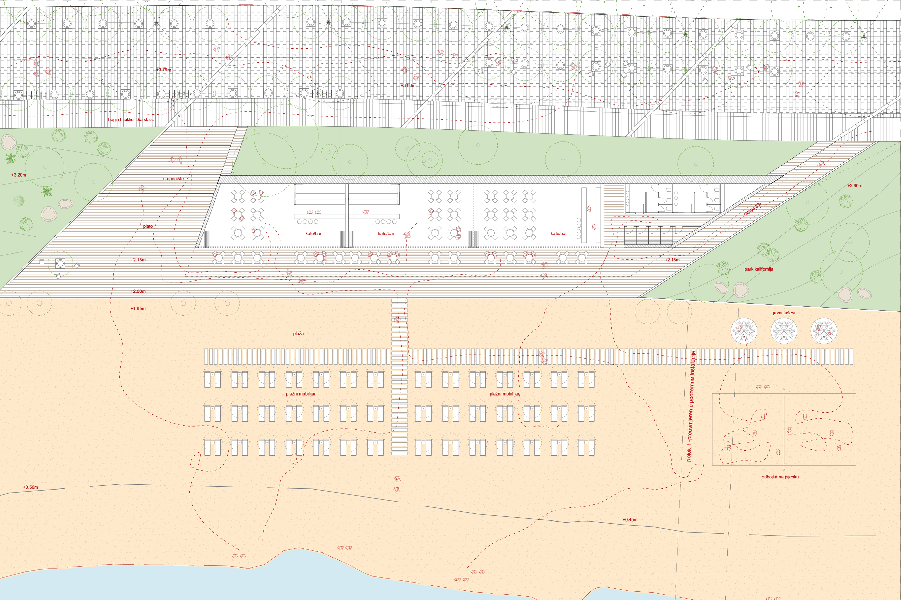
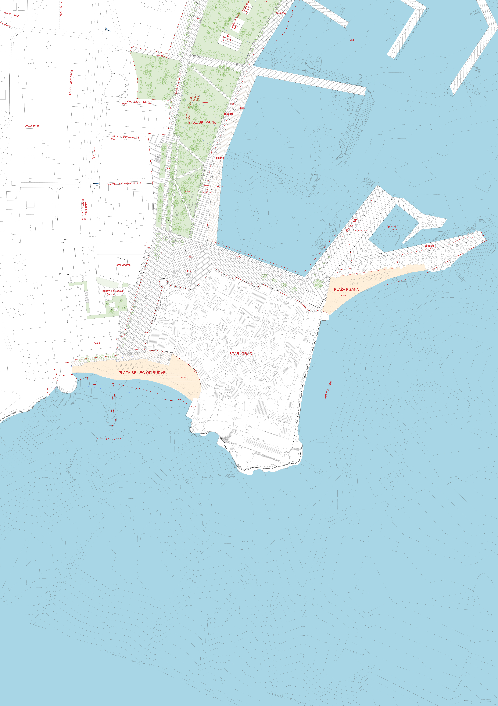

Promenade Budva

About the Project
Role: Architectural Designer
Company: NORMOTIC FZE
Project: Promenade Budva
Competition: International Competition · 2023
International architectural competition project developed as a proposal for the urban transformation of the coastal promenade in Budva, Montenegro.
Concept
The project proposes a nature-based urban strategy for Budva, using landscape, tree corridors, public space and the relationship with the sea to address the fragmented and unplanned urban development of the city. The existing structure is organized around three key urban and landscape identities — the Old Town, the City Beach and Cape Zavala — connected through a continuous system of public spaces and a new linear park.
The concept strengthens the identity and character of each area while introducing new transitional spaces and urban centres. A new cultural and hospitality hub is proposed between the Old Town and the marina, while a water sports and leisure centre creates a new destination at the transition between the beach and Cape Zavala. The largest intervention is a Mediterranean landscape park that integrates the different zones through thematic ecological environments.
The concept connects the city through a continuous public-space network. The Old Town area is enhanced through visual and urban "clean-up", improved public spaces, minimal and appropriate street furniture, better connections to the waterfront, and the removal of visually intrusive elements.
The new cultural centre combines a gallery, performance and concert spaces, a black-box theatre and a yacht club, creating a new civic focus for Budva and supporting its ambition to become a cultural centre of the Mediterranean.
Along the beach, cafés and public amenities are integrated into the landscape while maintaining a continuous pedestrian promenade. At Cape Zavala, the protected natural character is preserved, with a new pedestrian wooden boardwalk and revitalized pedestrian connections.
Together, these interventions establish a continuous relationship between city, landscape and sea, creating a more connected, resilient and culturally active Budva. The concept envisions a more connected, vibrant and distinctive Budva, shaped by its landscape, culture and relationship with the sea.













